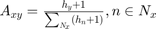
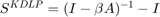
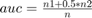

Contents
使用AUC来评价KDLP算法应用在Jazz网络上的预测准确性，使用H-index作为衡量节点的重要性方法
训练集、测试集是随机划分的，auc值的计算也有一定随机性，但在本例子中只做一次划分和auc计算。 对于每个网络，按照ratioTrain的比例划分训练集，并计算auc值。
clear; ratioTrain=0.9;%训练集比例 load netJazz;%加载已经预处理过的网络数据，邻接矩阵形式 disp('netJazz!');
netJazz!
划分训练集train和测试集test，保证训练集连通
thisdiv = [];%存放本次划分的auc值 num_testlinks = ceil((1-ratioTrain) * nnz(net)/2); % 确定测试集的边数目 [xindex, yindex] = find(tril(net)); linklist = [xindex yindex]; % 将网络（邻接矩阵）中所有的边找出来，存入linklist clear xindex yindex; % 为每条边设置标志位，判断是否能删除 test = sparse(size(net,1),size(net,2)); while (nnz(test) < num_testlinks) %---- 随机选择一条边 index_link = ceil(rand(1) * length(linklist)); uid1 = linklist(index_link,1); uid2 = linklist(index_link,2); %---- 判断所选边两端节点uid1和uid2是否可达，若可达则可放入测试集，否则重新挑选一条边 net(uid1,uid2) = 0; net(uid2,uid1) = 0; % 将这条边从网络中挖去用以判断挖掉后的网络是否还连通 tempvector = net(uid1,:); % 取出uid1一步可达的点，构建成一维向量 sign = 0; % 标记此边是否可以被移除，sign=0表示不可； sign=1表示可以 uid1TOuid2 = tempvector * net + tempvector; % uid1TOuid2表示二步内可达的点 if uid1TOuid2(uid2) > 0 sign = 1; % 二步即可达 else while (nnz(spones(uid1TOuid2) - tempvector) ~=0) % 直到可达的点到达稳定状态，仍然不能到达uid2，此边就不能被删除 tempvector = spones(uid1TOuid2); uid1TOuid2 = tempvector * net + tempvector; % 此步的uid1TOuid2表示K步内可达的点 if uid1TOuid2(uid2) > 0 sign = 1; % 某步内可达 break; end end end % 结束-判断uid1是否可达uid2 %----若此边可删除，则将之放入测试集中，并将此边从linklist中移除 if sign == 1 %此边可以删除 linklist(index_link,:) = []; test(uid1,uid2) = 1; else linklist(index_link,:) = []; net(uid1,uid2) = 1; net(uid2,uid1) = 1; end % 结束-判断此边是否可以删除并作相应处理 end % 结束（while）-测试集中的边选取完毕 train = net; test = test + test'; % 返回为训练集和测试集 train = sparse(train); test = sparse(test); train = spones(train + train'); test = spones(test+test');
计算每个节点的H-index
通用于有向网络，x->y表示x关注或引用y，说明y传播了知识给x
[m,n]=size(train);%矩阵大小 % 计算H-index drepmat = repmat(sum(train,1)',1,n).*train; % sum(train,1)每列元素相加得到行向量，行向量每个元素表示列标节点的入度 % .*train获得每条有向边箭尾节点的入度 Heach = zeros(1,m);%存放每个节点的H-index的行向量 for i = 1:m f = 1; H = 0; while f ~= 0 if sum(drepmat(:,i)>=f) >= f;%获取第i列即指向i节点的节点集的h指数 H=f; f=f+1; else f=0; end end Heach(i) = H; end Heach = Heach+1;
为网络上的边加权
加权公式: 
clear drepmat; Hrepmat = repmat(Heach,m,1).*train;%.*train获得每条有向边箭头节点的H-index clear Heach; sim = Hrepmat./repmat(sum(Hrepmat,2),1,n); % 分母是算出节点的指向的所有节点的H-index之和，表示节点接收的知识总量 % 分子除以分母说明节点的邻居占节点接收的知识量的比例 clear Hrepmat; sim(isnan(sim))=0;sim(isinf(sim)) = 0;%分母有可能是0，即不指向任何节点的节点
将KDLP算法应用在加权后的网络上，生成相似性矩阵
计算每对节点的相似性，应用公式: 
sim = inv( sparse(eye(m)) - 0.001*sim);
sim = sim - sparse(eye(m));
sim = sim+sim';%无向图需要对称处理
根据计算的相似性矩阵计算AUC
公式： 
n=10000; sim = triu(sim - sim.*train); % 只保留测试集和不存在边集合中的边的相似度（自环除外） non = 1 - train - test - eye(max(size(train,1),size(train,2))); test = triu(test); non = triu(non); % 分别取测试集和不存在边集合的上三角矩阵，用以取出他们对应的相似度分值 test_num = nnz(test); non_num = nnz(non); test_rd = ceil( test_num * rand( 1, n)); % ceil是取大于等于的最小整数，n为抽样比较的次数 non_rd = ceil( non_num * rand( 1, n)); test_pre = sim .* test; non_pre = sim .* non; test_data = test_pre( test == 1 )'; % 行向量，test 集合存在的边的预测值 non_data = non_pre( non == 1 )'; % 行向量，nonexist集合存在的边的预测值 test_rd = test_data( test_rd ); non_rd = non_data( non_rd ); clear test_data non_data; n1 = length( find(test_rd > non_rd) ); n2 = length( find(test_rd == non_rd)); auc = ( n1 + 0.5*n2 ) / n
auc =
0.9693